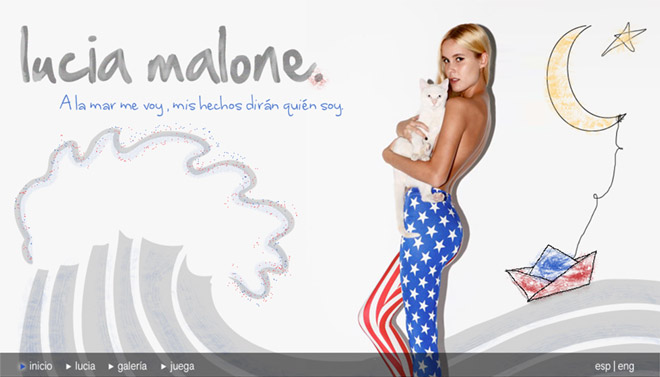
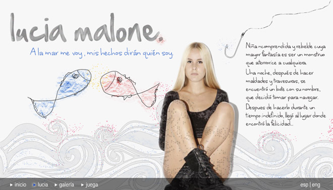

	<div id="portfolio" class="entry-single pageloader_inner wrapper clearfix">
    	<div id="entry-single">        
            <aside id="sidebar" class="right_float seperator_left">
            	<section class="sidebar_section">
                    <div class="entry-headline">
                        <div class="entry-title">
                          <h4>Lucía Malone</h4>
                      </div>
                        <div class="entry-date">Site web</div>
                    </div>
                    
                    <div class="entry-info">
                        <p>Proposition de site personnel de Lucia Malone, fille incomprise et rebelle dont la plus grande fantaisie est de devenir un monstre pour terroriser tout le monde.</p>

<p>Une nuit, après avoir fait des bétises, elle voit une petite barque avec son nom et décide alors de naviguer avec.</p>

<p>Après avoir navigué pendant un temps indéfini, elle arrive à un lieu ou elle trouve le bonheur...</p>


                    

                        
                    </div>
                </section>
            </aside>
            
            <article id="maincontent" class="left_float"> 
            
            
<article id="maincontent" class="left_float"> 
            
            
                
                
              
               
	  </article> <!-- END #maincontent -->
    	</div>        
	</div>
